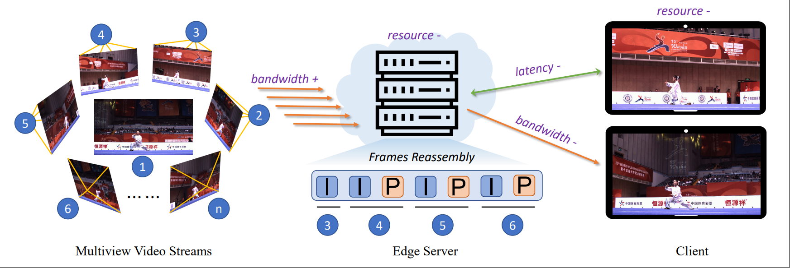
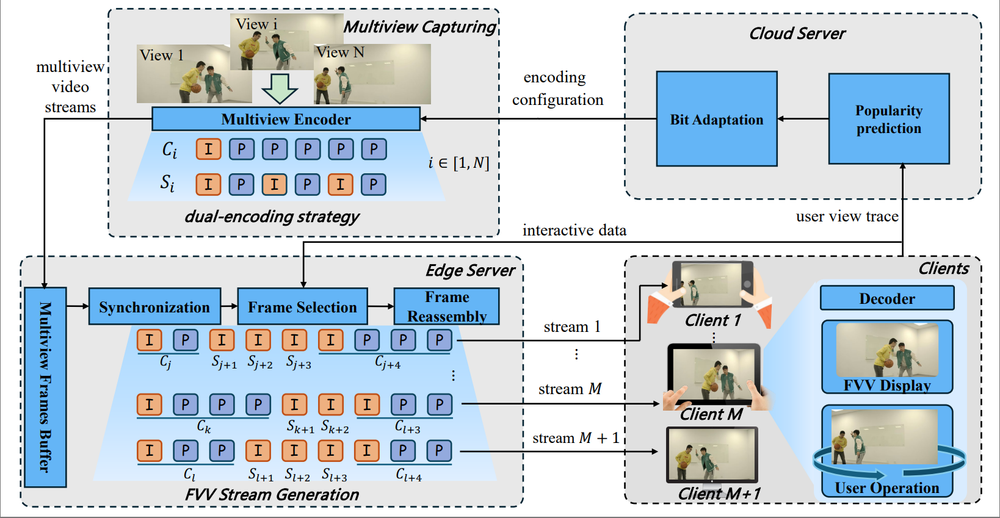
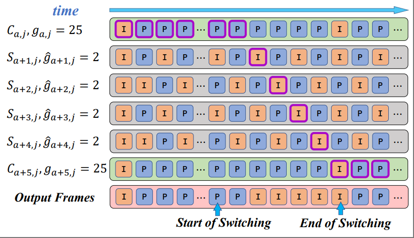
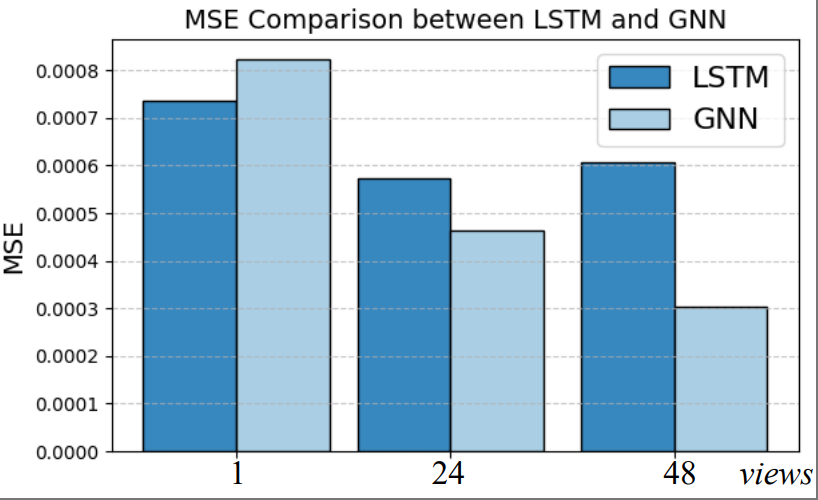

<!DOCTYPE html>
<html>
<head>
  <meta charset="utf-8">
  <!-- Meta tags for social media banners, these should be filled in appropriatly as they are your "business card" -->
  <!-- Replace the content tag with appropriate information -->
  <meta name="description" content="DESCRIPTION META TAG">
  <meta property="og:title" content="SOCIAL MEDIA TITLE TAG"/>
  <meta property="og:description" content="SOCIAL MEDIA DESCRIPTION TAG TAG"/>
  <meta property="og:url" content="URL OF THE WEBSITE"/>
  <!-- Path to banner image, should be in the path listed below. Optimal dimenssions are 1200X630-->
  <meta property="og:image" content="static/image/your_banner_image.png" />
  <meta property="og:image:width" content="1200"/>
  <meta property="og:image:height" content="630"/>


  <meta name="twitter:title" content="TWITTER BANNER TITLE META TAG">
  <meta name="twitter:description" content="TWITTER BANNER DESCRIPTION META TAG">
  <!-- Path to banner image, should be in the path listed below. Optimal dimenssions are 1200X600-->
  <meta name="twitter:image" content="static/images/your_twitter_banner_image.png">
  <meta name="twitter:card" content="summary_large_image">
  <!-- Keywords for your paper to be indexed by-->
  <meta name="keywords" content="KEYWORDS SHOULD BE PLACED HERE">
  <meta name="viewport" content="width=device-width, initial-scale=1">


  <title>VARFVV: View-Adaptive Real-Time Interactive Free-View Video Streaming with Edge Computing (JSAC 2025)</title>
  <link rel="icon" type="image/x-icon" href="static/images/favicon.ico">
  <link href="https://fonts.googleapis.com/css?family=Google+Sans|Noto+Sans|Castoro"
  rel="stylesheet">

  <link rel="stylesheet" href="static/css/bulma.min.css">
  <link rel="stylesheet" href="static/css/bulma-carousel.min.css">
  <link rel="stylesheet" href="static/css/bulma-slider.min.css">
  <link rel="stylesheet" href="static/css/fontawesome.all.min.css">
  <link rel="stylesheet"
  href="https://cdn.jsdelivr.net/gh/jpswalsh/academicons@1/css/academicons.min.css">
  <link rel="stylesheet" href="static/css/index.css">

  <script src="https://ajax.googleapis.com/ajax/libs/jquery/3.5.1/jquery.min.js"></script>
  <script src="https://documentcloud.adobe.com/view-sdk/main.js"></script>
  <script defer src="static/js/fontawesome.all.min.js"></script>
  <script src="static/js/bulma-carousel.min.js"></script>
  <script src="static/js/bulma-slider.min.js"></script>
  <script src="static/js/index.js"></script>
</head>
<body>


  <section class="hero">
    <div class="hero-body">
      <div class="container is-max-desktop">
        <div class="columns is-centered">
          <div class="column has-text-centered">
            <h1 class="title is-1 publication-title">VARFVV: View-Adaptive Real-Time Interactive Free-View Video Streaming with Edge Computing</h1>
            <div class="is-size-5 publication-authors">
              <!-- Paper authors -->
              <span class="author-block"><a href="#" target="_blank">Qiang Hu</a>,</span>
              <span class="author-block"><a href="#" target="_blank">Qihan He</a>,</span>
              <span class="author-block"><a href="#" target="_blank">Houqiang Zhong</a>,</span>
              <span class="author-block"><a href="#" target="_blank">Guo Lu</a>,</span>
              <span class="author-block"><a href="#" target="_blank">Xiaoyun Zhang</a>,</span>
              <span class="author-block"><a href="#" target="_blank">Guangtao Zhai</a>,</span>
              <span class="author-block"><a href="#" target="_blank">Yanfeng Wang</a></span>
                  </div>

                  <div class="is-size-5 publication-authors">
                    <span class="author-block">Shanghai Jiao Tong University, ShanghaiTech University<br>IEEE Journal on Selected Areas in Communications (JSAC), 2025</span>
                  </div>

                  <div class="column has-text-centered">
                    <div class="publication-links">
                         <!-- Arxiv PDF link -->
                      <span class="link-block">
                        <a href="https://arxiv.org/abs/2501.13630" target="_blank"
                        class="external-link button is-normal is-rounded is-dark">
                        <span class="icon">
                          <i class="fas fa-file-pdf"></i>
                        </span>
                        <span>Paper</span>
                      </a>
                    </span>

                    <!-- Supplementary PDF link -->
                    <span class="link-block">
                      <a href="static/pdfs/FVV_E.pdf" target="_blank"
                      class="external-link button is-normal is-rounded is-dark">
                      <span class="icon">
                        <i class="fas fa-file-pdf"></i>
                      </span>
                      <span>Supplementary</span>
                    </a>
                  </span>

                  <!-- Github link -->
                  <span class="link-block">
                    <a href="https://github.com/qianghu-huber/VARFVV/" target="_blank"
                    class="external-link button is-normal is-rounded is-dark">
                    <span class="icon">
                      <i class="fab fa-github"></i>
                    </span>
                    <span>Code</span>
                  </a>
                </span>

                <!-- ArXiv abstract Link -->
                <span class="link-block">
                  <a href="https://arxiv.org/abs/2501.13630" target="_blank"
                  class="external-link button is-normal is-rounded is-dark">
                  <span class="icon">
                    <i class="ai ai-arxiv"></i>
                  </span>
                  <span>arXiv</span>
                </a>
              </span>
            </div>
          </div>
        </div>
      </div>
    </div>
  </div>
</section>


<!-- Image carousel -->
<section class="hero is-small">
  <div class="hero-body">
    <div class="container">
      <div id="results-carousel" class="carousel results-carousel">
       <div class="item">
        <!-- Your image here -->
        
        <h2 class="subtitle has-text-centered">
          First image description.
        </h2>
      </div>
      <div class="item">
        <!-- Your image here -->
        
        <h2 class="subtitle has-text-centered">
          Second image description.
        </h2>
      </div>
      <div class="item">
        <!-- Your image here -->
        
        <h2 class="subtitle has-text-centered">
         Third image description.
       </h2>
     </div>
     <div class="item">
      <!-- Your image here -->
      
      <h2 class="subtitle has-text-centered">
        Fourth image description.
      </h2>
    </div>
  </div>
</div>
</div>
</section>
<!-- End image carousel -->


  
<!-- Paper abstract -->
<section class="section hero is-light">
  <div class="container is-max-desktop">
    <div class="columns is-centered has-text-centered">
      <div class="column is-four-fifths">
        <h2 class="title is-3">Abstract</h2>
        <div class="content has-text-justified">
          <p>
            Free-view video (FVV) allows users to explore
            immersive video content from multiple views. However,
            delivering FVV poses significant challenges due to the
            uncertainty in view switching, combined with the substantial bandwidth and computational resources required
            to transmit and decode multiple video streams, which
            may result in frequent playback interruptions. Existing
            approaches, either client-based or cloud-based, struggle
            to meet high Quality of Experience (QoE) requirements
            under limited bandwidth and computational resources. To
            address these issues, we propose VARFVV, a bandwidthand computationally-efficient system that enables realtime interactive FVV streaming with high QoE and
            low switching delay. Specifically, VARFVV introduces a
            low-complexity FVV generation scheme that reassembles
            multiview video frames at the edge server based on userselected view tracks, eliminating the need for transcoding and significantly reducing computational overhead.
            This design makes it well-suited for large-scale, mobilebased UHD FVV experiences. Furthermore, we present
            a popularity-adaptive bit allocation method, leveraging
            a graph neural network, that predicts view popularity
            and dynamically adjusts bit allocation to maximize QoE
            within bandwidth constraints. We also construct an FVV
            dataset comprising 330 videos from 10 scenes, including
            basketball, opera, etc. Extensive experiments show that
            VARFVV surpasses existing methods in video quality,
            switching latency, computational efficiency, and bandwidth
            usage, supporting over 500 users on a single edge server
            with a switching delay of 71.5ms. Our code and dataset are
            available at https://github.com/qianghu-huber/VARFVV.

          </p>
        </div>
      </div>
    </div>
  </div>
</section>
<!-- End paper abstract -->


  
<!-- Teaser video-->
<section class="hero teaser">
  <div class="container is-max-desktop">
    <div class="hero-body">
      <video poster="" id="tree" autoplay controls muted loop height="100%">
        <!-- Your video here -->
        <source src="static/videos/banner_video.mp4"
        type="video/mp4">
      </video>
      <h2 class="subtitle has-text-centered">
        Aliquam vitae elit ullamcorper tellus egestas pellentesque. Ut lacus tellus, maximus vel lectus at, placerat pretium mi. Maecenas dignissim tincidunt vestibulum. Sed consequat hendrerit nisl ut maximus. 
      </h2>
    </div>
  </div>
</section>
<!-- End teaser video -->


<!-- Youtube video -->
<section class="hero is-small is-light">
  <div class="hero-body">
    <div class="container">
      <!-- Paper video. -->
      <h2 class="title is-3">Video Presentation</h2>
      <div class="columns is-centered has-text-centered">
        <div class="column is-four-fifths">
          
          <div class="publication-video">
            <!-- Youtube embed code here -->
            <iframe src="https://www.youtube.com/embed/JkaxUblCGz0" frameborder="0" allow="autoplay; encrypted-media" allowfullscreen></iframe>
          </div>
        </div>
      </div>
    </div>
  </div>
</section>
<!-- End youtube video -->


<!-- Video carousel -->
<section class="hero is-small">
  <div class="hero-body">
    <div class="container">
      <h2 class="title is-3">Another Carousel</h2>
      <div id="results-carousel" class="carousel results-carousel">
        <div class="item item-video1">
          <video poster="" id="video1" autoplay controls muted loop height="100%">
            <!-- Your video file here -->
            <source src="static/videos/carousel1.mp4"
            type="video/mp4">
          </video>
        </div>
        <div class="item item-video2">
          <video poster="" id="video2" autoplay controls muted loop height="100%">
            <!-- Your video file here -->
            <source src="static/videos/carousel2.mp4"
            type="video/mp4">
          </video>
        </div>
        <div class="item item-video3">
          <video poster="" id="video3" autoplay controls muted loop height="100%">\
            <!-- Your video file here -->
            <source src="static/videos/carousel3.mp4"
            type="video/mp4">
          </video>
        </div>
      </div>
    </div>
  </div>
</section>
<!-- End video carousel -->


<!--BibTex citation -->
  <section class="section" id="BibTeX">
    <div class="container is-max-desktop content">
      <h2 class="title">BibTeX</h2>
      <pre><code>@article{hu2025varfvv,
  title={VARFVV: View-Adaptive Real-Time Interactive Free-View Video Streaming with Edge Computing},
  author={Hu, Qiang and He, Qihan and Zhong, Houqiang and Lu, Guo and Zhang, Xiaoyun and Zhai, Guangtao and Wang, Yanfeng},
  journal={IEEE Journal on Selected Areas in Communications (JSAC)},
  year={2025},

}</code></pre>
    </div>
</section>
<!--End BibTex citation -->


  <footer class="footer">
  <div class="container">
    <div class="columns is-centered">
      <div class="column is-8">
        <div class="content">

          <p>
            This page was built using the <a href="https://github.com/eliahuhorwitz/Academic-project-page-template" target="_blank">Academic Project Page Template</a> which was adopted from the <a href="https://nerfies.github.io" target="_blank">Nerfies</a> project page.
            You are free to borrow the source code of this website, we just ask that you link back to this page in the footer. <br> This website is licensed under a <a rel="license"  href="http://creativecommons.org/licenses/by-sa/4.0/" target="_blank">Creative
            Commons Attribution-ShareAlike 4.0 International License</a>.
          </p>

        </div>
      </div>
    </div>
  </div>
</footer>

<!-- Statcounter tracking code -->
  
<!-- You can add a tracker to track page visits by creating an account at statcounter.com -->

    <!-- End of Statcounter Code -->

  </body>
  </html>
